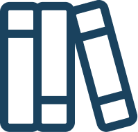

Topic 1
Topic 2
Topic 3
Topic 4
Topic 5
Using a variety of research methods, I help you understand the experience that customer's have with your business and leverage that to create actionable insights that help drive engagement.
Businesses are faced with many challenges in providing services to customers, defining the right problem is the critical first step in understanding where change is required.
I apply proven user centric strategies to design new experiences for your customers that improves customer satisfaction and creates strong brand relationships.
With years of experience in delivery projects, I can support your team through the full product and project lifecycle.
Research and analysis of the customer journey, redesign of the information architecture and responsive re-design of the website

A group case study project where I conducted user reserch, analysis and problem definition which formed the basis for a full website redesign.

View all projects